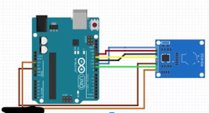

Welcome to ....
Simon and Kaisen's Arduino page!!
RFID door lock (brief plan)
Intro:
One day, Simon(who is a poop) was in China sleeping while Kaisen(who also happens to be a poop) went to STEM (SUPER-TECHNOLOGICALSCIENTIFIC-EDIBLE-MEAT) class. He had to make a project with the guy (a poop) 9,582km (very close) away. Together, they would eventually talk on Discord (for like 9 million hours) and decide to make a glorious RFID (ravioli-free-iguana-decapitation) door lock. It is a mechanism that locks a door and can only be opened by a tag (with a specific UID) stored in the sensor. Kaisen thought of it (he has an IQ of 9999999999999999999999999999999999 9999999999999999999999999999999999 9999999999999999999999999999999999 9999999999999999999999999999999999 9999999999999999999999999999999999 9999999999999999999999999999999999 9999999999999999999999999999999999 9999999999999999999999999999999999) because Simon knows nothing about Arduino. It includes the flashy RFID sensor (totally OG name) and a bunch of generic Arduino stuff. The thing that took the longest in our project to make was the Cloud 8 (TOTALLY not stolen from the Cloud 9 eSports team) symbol because it is majestic.


Materials required
- RFID tags (white and blue)
- RC255 Module
- Arduino UNO
- Jumper Wires
- Breadboard
- Resistors
- RFID sensor
- Soldering Iron
- Buzzer (maybe)


Sensors used
What problem can it solve?
- Security in your house (kinda like a hotel room)
- Instead of looking through your keys, you use a tag or card (convenience)
Imagine this: you go to your friend's house for a sleepover and forget to lock the door. A robber comes and steals your food. Then, you get home, and since you have no food, starve to death. If you had a RFID lock, the robber wouldn't be able to get into your house and you and your food would be fine because our automatic lock locks by itself!


Our code:
#include <SPI.h>
#include <MFRC522.h>
#include <Servo.h>
#define SS_PIN 10
#define RST_PIN 9
#define LED_G 5
#define LED_R 4
#define BUZZER 2
MFRC522 mfrc522(SS_PIN, RST_PIN);
Servo myServo;
void setup()
{
Serial.begin(9600);
SPI.begin();
mfrc522.PCD_Init();
myServo.attach(3);
myServo.write(0);
pinMode(LED_G, OUTPUT);
pinMode(LED_R, OUTPUT);
pinMode(BUZZER, OUTPUT);
noTone(BUZZER);
Serial.println("Put your card to the reader...");
Serial.println();
}
void loop()
{
// Look for new cards
if ( ! mfrc522.PICC_IsNewCardPresent())
{
return;
}
// Select one of the cards
if ( ! mfrc522.PICC_ReadCardSerial())
{
return;
}
Serial.print("UID tag :");
String content= "";
byte letter;
for (byte i = 0; i < mfrc522.uid.size; i++)
{
Serial.print(mfrc522.uid.uidByte[i] < 0x10 ? " 0" : " ");
Serial.print(mfrc522.uid.uidByte[i], HEX);
content.concat(String(mfrc522.uid.uidByte[i] < 0x10 ? " 0" : " "));
content.concat(String(mfrc522.uid.uidByte[i], HEX));
}
Serial.println();
Serial.print("Message : ");
content.toUpperCase();
if (content.substring(1) == "XX XX XX XX") // put the card UIDs here
{
Serial.println("Hello, Welcome home");
Serial.println();
delay(500);
digitalWrite(LED_G, HIGH);
tone(BUZZER, 500);
delay(300);
noTone(BUZZER);
myServo.write(180);
delay(7000);
myServo.write(0);
digitalWrite(LED_G, LOW);
}
else {
Serial.println("Go away, you don't live here...");
digitalWrite(LED_R, HIGH);
tone(BUZZER, 300);
delay(1000);
digitalWrite(LED_R, LOW);
noTone(BUZZER);
}
}
Schematic
